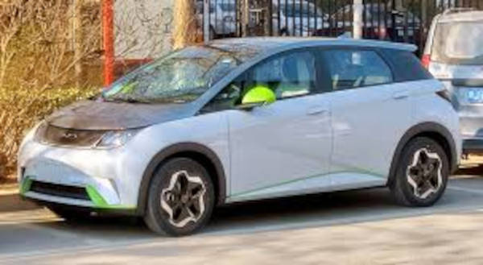

Com suas 355.607 vendas o gol sai disparado nas vendas no primeiro semestre de 2024
Com uma diferença de 158.539 vendas para o gol, o uno se torna o segundo mais vendido com suas 197.068 vendas
Com suas 189.419 vendas o palio oculpa o terceiro lugar
Com suas 174.253 vendas o onix oculpa a sua quarta posição
Por último e não menos importante para fechar o top 5, tem o hb20 com suas 169.977 vendas
Atualmente os Carros elétricos tem seu nome crescido nestes últimos meses, o nome que mais se fala no Brasil é o
BYD onde ela tem vendido muito de seus modelos, entre eles o mais vendido
é o:
BYD Dolphin Mini

Este veículo vem gradualmente crescendo por ser um carro compacto e ter o que a maioria das pessoas procura
em um carro, conforto e ecomonia, este modelo se compara com o UP, carro da marca Volkswagen pelo formato dos
dois, porém por ser um carrocom suas vantagens e diferenciais e ser um carro muito requisitado, o seu preço é